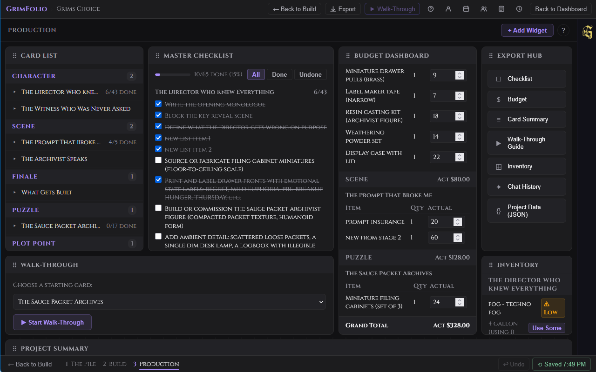
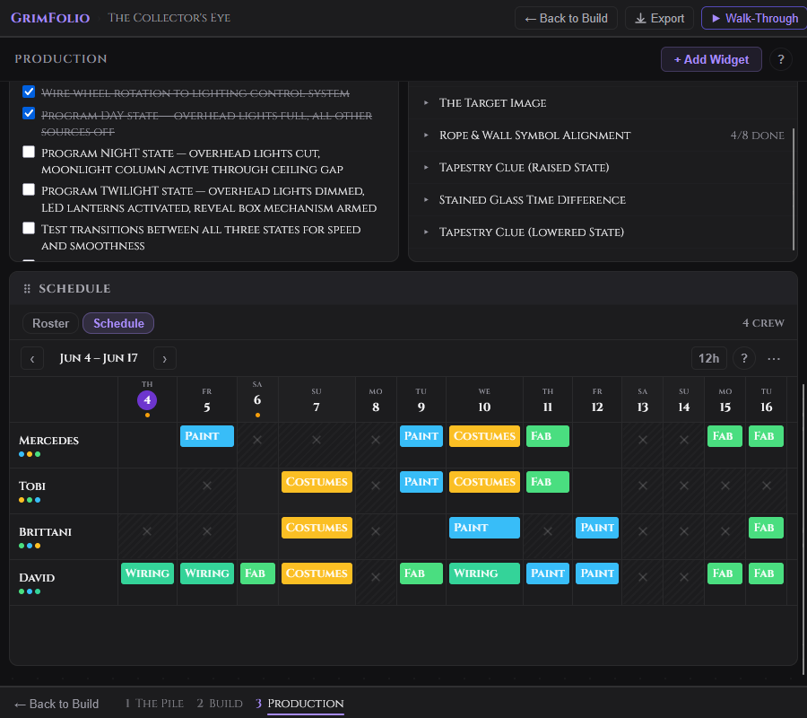
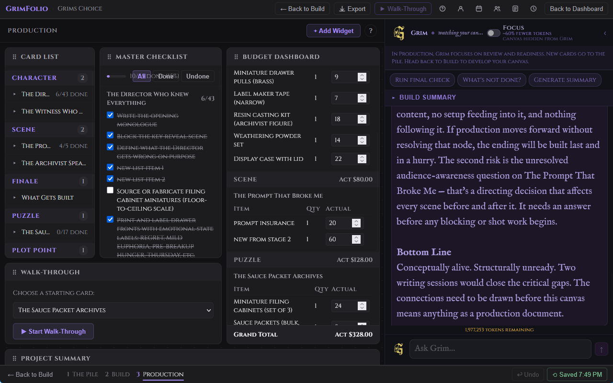
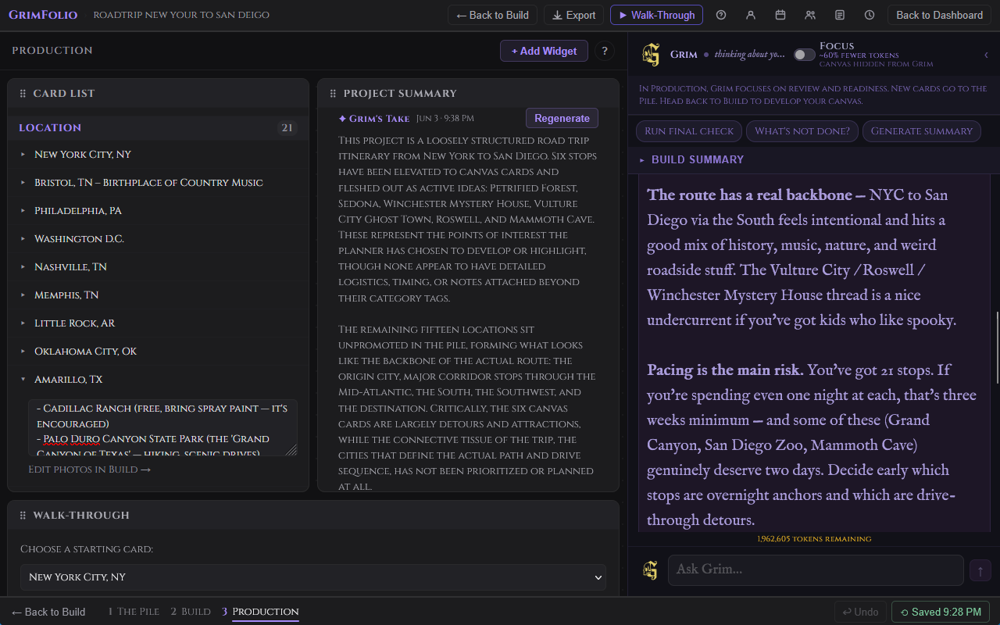

Stage 3 — Production
Production replaces the canvas view entirely. The spatial map from Stage 2 stays intact behind the scenes. Production surfaces it differently: as a customizable command center built from widgets. Each widget is a focused tool. You choose what goes on the board and where it sits. Everything here reflects the current state of your project. Check off a checklist item in Production and it updates in Build. Edit a budget line and it saves to the card. Nothing is a duplicate view — it is the same data in a different interface.

Getting Started
When you enter Stage 3 for the first time the board is empty and a help modal opens automatically.
The toolbar at the top has three elements: the Production stage label, the + Add Widget button, and a ? help button.
Click + Add Widget to open the widget picker. It shows all ten available widgets. Widgets already on the board show an Added ✓ badge. Pro-only widgets show a Pro badge if your plan does not include them. Click any unlocked unadded widget to place it. The picker closes and the widget appears at the bottom of the layout.
The Widget Grid
Pro, Studio, and Base Unlimited accounts get a drag-and-drop grid. Widgets can be repositioned and resized freely using handles at the edges and corners. The layout autosaves 800ms after any change.
Free accounts get a stacked vertical layout. Widgets appear at full width in the order added. Position and size cannot be changed.
Viewers always see the owner's saved layout regardless of their own plan.
Every widget header has a drag handle to reposition it, a label, and an × button to remove it. Removing a widget does not delete any data — add it back at any time from the widget picker.
Cross-Stage Sync
Production and Build share the same data layer.
Hiding Cards from Production
Some cards belong on the canvas but not in the command center. Right-click any card row in the Card List widget and choose Hide from Production. The card disappears from all widgets but remains on the canvas in Build.
A collapsible Hidden from Production section at the bottom of the Card List shows everything hidden. Right-click any hidden card and choose Show in Production to restore it.
The Widgets
Card List Free
All canvas cards grouped by type. Click any card row to expand it inline showing notes, checklist items, and an "Edit photos in Build →" link. Collapsed rows show a checklist summary badge and the card's current status. Right-click any row to hide or show the card in Production.
Master Checklist Free
Every checklist item across all visible cards in one scrollable list. A progress bar at the top shows total completion: X/Y done (Z%). Cards are grouped by title with a per-card done/total count. Filter buttons: all, done, undone. Toggle items directly in this widget — changes sync instantly to Build and to the Card List widget.
Budget Dashboard Free
All budget lines across all visible cards grouped by card type. Each card section shows a table with item name, quantity, and actual cost (editable inline). A group subtotal appears at the end of each type group. A grand total appears at the bottom of the widget. Edit actual cost directly — changes save to the card automatically.
Walk-Through Free
Run Walk-Through without leaving Production. The widget contains its own self-contained navigation interface.
The launch screen shows a dropdown to pick a starting card and a Start Walk-Through button. Active mode fills the widget with the current card's type, title, status, notes, and navigation. Single-path cards show a Continue button. Fork cards show all outgoing options as labeled buttons. A breadcrumb tracks the path taken.
Export Hub Free
Seven export options in one place.
| Export | Format | What it contains |
|---|---|---|
| Checklist | All checklist items grouped by card. | |
| Budget | All budget lines with estimated and actual costs. | |
| Card Summary | All cards with type, status, and notes. | |
| Walk-Through Guide | The project sequence as a readable guide. | |
| Inventory | Inventory assignments across all cards. | |
| Chat History | Full Grim conversation log for this project. | |
| Project Data | JSON | Raw project export, downloads immediately. |
PDF exports open in a print preview overlay with download controls. JSON exports download directly without a preview. Free plan exports include a GrimFolio watermark on PDFs.
For full export documentation see the Exports page.
Project Summary Free
A free-text area for project overview notes — goals, current status, key decisions, anything worth having at the top of your command center. Saves automatically.
Grim's Take (Pro only) — A second block below the manual notes. Click Generate and Grim analyzes the canvas to write a short production status read. The timestamp shows when it was last generated. Click Regenerate to refresh at any time.
Upcoming Events Free
Events from the project calendar in the next 14 days shown as a chronological timeline strip. A scope toggle switches between This Project (14 days) and All (events across all your projects, next 10 days). Open Calendar → navigates to the full project calendar.
Inventory Pro
All inventory items assigned to cards across the project grouped by card name. Each row shows item name, current quantity and unit, quantity in use by this card, and a ⚠ Low badge when stock is at or below the low-stock threshold.
Consumable items show a Use Some button. Click it to open an inline form with a quantity input. The collection quantity updates immediately on confirm.
A collapsible Collection Overview section at the bottom shows all linked inventory collections with low-stock alerts. Go to Inventory Manager → navigates to the full Inventory page.
Inspiration Board Pro
A read-only image grid showing all inspiration images linked to cards across the project. Each thumbnail shows the image, an optional title, and the card it belongs to. Click any thumbnail to open it in a lightbox. The board is read-only — manage images in Build via the Inspiration section of each card's detail drawer.
Schedule Pro
Crew roster and a 14-day shift grid for production scheduling. Two tabs: Roster and Schedule.
Roster tab — All crew members with names, role pills (color-coded), contact info, and total shift count. Click a row to expand it. Click ✎ to edit. Click × to remove (removes all their shifts after confirmation).
Schedule tab — A gantt grid. One row per crew member. One column per day. Today's column is highlighted. Weekends are shaded.

| Action | How |
|---|---|
| Add a shift | Click an empty cell or click the + button. |
| Edit a shift | Right-click the shift bar, choose Edit shift. |
| Copy a shift | Drag the shift bar to the target cell. |
| Delete a shift | Click × on the shift bar. |
| Mark a date unavailable | Right-click the cell to toggle a blackout. |
| Navigate weeks | ‹ and › arrows or the Today button. |
| Toggle time format | 12h / 24h button in the date nav bar. |
Hovering a shift bar shows a tooltip with role, time range, and notes. When only one crew member is scheduled on a date and two or more are on the roster an understaffed indicator appears on that date column.
The … overflow menu in the date nav bar offers Export CSV, Import CSV, and Export for Sithon.
Grim in Production Pro
Production Grim is a separate conversation from Stage 2 Grim. Same assistant, different context and focus. In Production, Grim is operationally oriented — readiness, gaps, prioritization, final checks.

Context
At the start of each turn Production Grim reads your project name, all visible card titles, types, and checklist items with done/undone status. It does not receive the full canvas graph, connection structure, or Stage 2 Grim conversation history. Its context is your current production state — what is done and what is not.
Opening Message
The first time you open Production Grim on a project it opens with a specific operational question. If a Build Summary exists (generated via the Project Summary widget) Grim uses it to orient before asking about the most pressing thing. On subsequent visits it resumes from saved conversation history.
Build Summary Card
A collapsible Build Summary card appears at the top of the Grim widget. It shows the Grim-generated summary from the Project Summary widget. If no summary exists yet a link to generate one in Build appears.
Quick Prompts
| Button | What it sends |
|---|---|
| Run final check | Asks Grim for the highest-priority gaps before the project opens. |
| What's not done? | Sends all incomplete checklist items by card and asks for prioritization. |
| Generate summary | Asks Grim to write a production status read: state, risks, what remains. |

Conversation
Type in the input and press Enter to send. Shift+Enter for a new line. Production Grim responds in plain text only. It does not create cards, connections, checklists, or any canvas objects. Its role here is advisory.
Production conversations save separately from Stage 2 conversations. Both appear in the Chat History export.